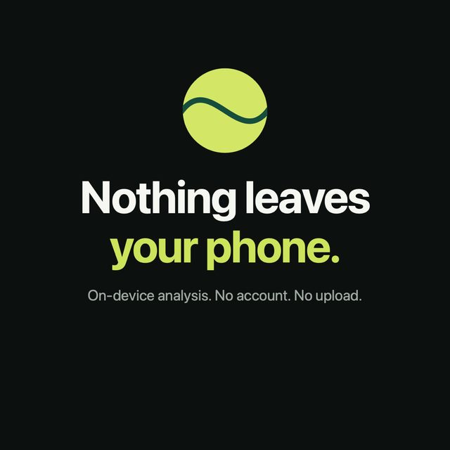

How it works
Three steps, no editing
Most match recordings are more waiting than playing. RallyOnly keeps the play.
Film as you already do
Stand the phone behind the baseline with the whole court in frame and record with the Camera app.
Pick the video
A video model on your iPhone watches the court and marks where each point starts and ends. Pick several recordings at once if you like.
Watch, trim, share
Play the condensed match or the reel right away, nudge any rally that's off, and export in 16:9 or 9:16.
What you get
The match you'll actually rewatch
The condensed match
Every point, none of the waiting in between.
A two-minute reel
Your best rallies, picked and cut for you, ready to send.
Every rally ranked
Tick the ones you want and build your own reel. Your serves get their own list.
Made for sharing
Export 16:9 for YouTube or 9:16 for stories, with an optional title card.
Why players pick it
Your footage stays yours
- Nothing leaves your phoneNo upload, no account, no waiting for a server.
- It doesn't fill your storageRallyOnly reads the original in Photos instead of copying it, and plays the cut straight out of it.
- You never lose a match to the appIt doesn't record, so a crash can't cost you a set. You film with the Camera app.
- What you make stays yoursStop paying and nothing you exported or saved is taken back.

Comparison
Looking for a SwingVision alternative?
SwingVision does a lot: line calls, ball speed, shot stats, scoring with an Apple Watch. Many players mostly use it for one thing, the edit that removes the time between points. If that's you, RallyOnly does only that part, for less.
| RallyOnly | SwingVision | |
|---|---|---|
| Removes dead time, highlight reel | Yes | Yes |
| Line calls, ball speed, stats | No | Yes |
| Records inside the app | No: film with the Camera app | Yes |
| Free tier | 4 matches a month, every feature, watermarked exports | Limited |
| Paid plans (US) | $4.99/month or $34.99/year | From $14.99/month or $95.99/year |
| Android | No | No |
Prices from the US App Store on 25 October 2026; they differ by country and may change. SwingVision is a trademark of SwingVision, Inc. RallyOnly is an independent app and is not affiliated with it.
Filming tips
Get a clean cut
- Behind the baselineA few metres back, with both players and the whole court in frame.
- As high as you canA fence post or a bag on a bench beats the ground.
- Not from the side of the netPlayers walking past the lens look like play to any camera.
- Landscape or portraitBoth work; landscape fits the court best.
Questions
Before you try it
Does my video get uploaded?
No. RallyOnly analyses the video on your iPhone and reads the original straight from Photos. Nothing is uploaded and there is no account. See the privacy policy.
How long does it take?
Roughly a ninth of the recording's length on a recent iPhone: about four minutes for a half-hour session.
What if it cuts a point wrong?
Open the rally and move its start or end, a second or three at a time. Sending us the details helps too: rallyonly.feedback@gmail.com.
Can I use GoPro or other camera footage?
Yes, once the video is in your Photos library. Each file becomes its own session for now.
Is it free?
Four new matches a month are free with every feature; free exports carry a small watermark. RallyOnly Pro removes the limit and the watermark, and new subscribers can start with a free trial.
Android?
No, iPhone only (iOS 17 or later).
Every rally. None of the waiting.
Your next match, cut on your phone while you pack your bag.
Download on the App StoreFree for 4 matches a month